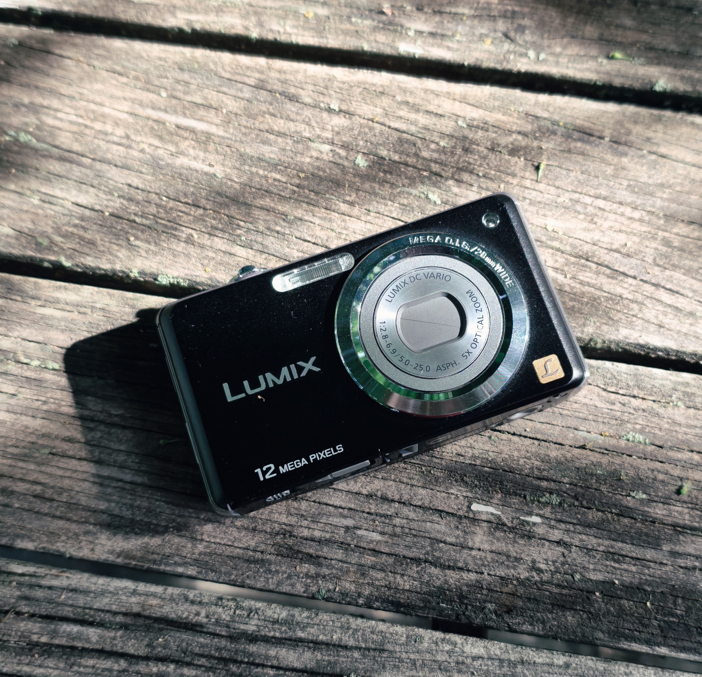

Вчера я наконец добрался до этой мыльницы прямиком из 2010 года. Она давно мозолила мне глаза — хотелось понять, на что она ещё способна. Но всё никак не складывалось: не было подходящей карты памяти, не было картридера, чтобы перекинуть снимки на ноутбук.
Недавно звёзды наконец сошлись. Нашлась SD-карта нужного формата и старый телефон с поддержкой micro SD. Как раз отключили свет — делать было нечего. Я достал камеру и пошёл фотографировать во дворе всякую мелочь, особо интересуясь тем, что она умеет на зуме от 5×.
Первое разочарование — экран
Встроенный дисплей оказался настоящей проблемой. Он безбожно врёт по цветам, а у меня от него буквально через 4–5 минут начинают болеть глаза — я довольно чувствителен к плохим матрицам. Из-за низкого разрешения сложно понять, где фокус, поэтому пару кадров я «промазал». Здесь нужно не смотреть на дисплейчик, а именно чувствовать процесс и саму камеру.

Второе разочарование — шумы
Сегодня, когда я сел обрабатывать снимки, выяснилось следующее: мыльница может только в JPG, а значит, функция AI Denoise в Lightroom недоступна. Я попробовал установить пару бесплатных локальных программ для шумоподавления — безуспешно: железо оказалось слабовато, и они попросту отказались запускаться.


А что с самими фотографиями?

Если смотреть на результат без поправок на ограничения — кадры вышли вполне достойные. Я не стал их обрабатывать, оставил как есть. Это именно те самые «честные» фотографии, где работала оптика без участия нейросетей.


Сравнение с телефоном


Если сравнивать с моим Vivo X200 Pro mini — картина неоднозначная. В стоковом режиме птицы на зуме 10–15× на телефоне выходят не очень: страдает резкость, появляется характерная «мыльность» из-за ограничений оптики и агрессивной работы ИИ-алгоритмов.

Panasonic в JPG выдаёт более натуральную картинку, но у него своя беда — заметные шумы и, местами, недостаточная резкость. Но, в пользу Lumix скажу, что даже в такой ситуации он делает довольно натуральные фотографии.


.jpg)
.jpg)
Итог


За 16 лет оптика смартфонов шагнула невероятно далеко — субфлагманы сегодня снимают на уровне мыльниц, а флагманы давно перегнали подобные Panasonic-у аппараты. Но в погоне за красивой картинкой производители всё активнее задействуют вычислительную фотографию: алгоритмы сглаживают, пересвечивают, дорисовывают. И порой результат становится слишком неестественным; лишённым «души».

Старая мыльница умеет другое. Она делает снимки с той самой атмосферой 2010–2015-х — немного мягкие, немного шумные, но живые. Это камера для повседневности, для случайных моментов. Она — не про технические характеристики, а про воспоминания и атмосферность.
Иногда такая камера делает снимок теплее и живее, чем напичканный алгоритмами телефон. В этих фотографиях есть душа — и это, пожалуй, самое главное.
Если бы я не заинтересовался фотографией на более серьезном уровне, я бы, пожалуй, взял себе что-то похожее и всегда носил в кармане.